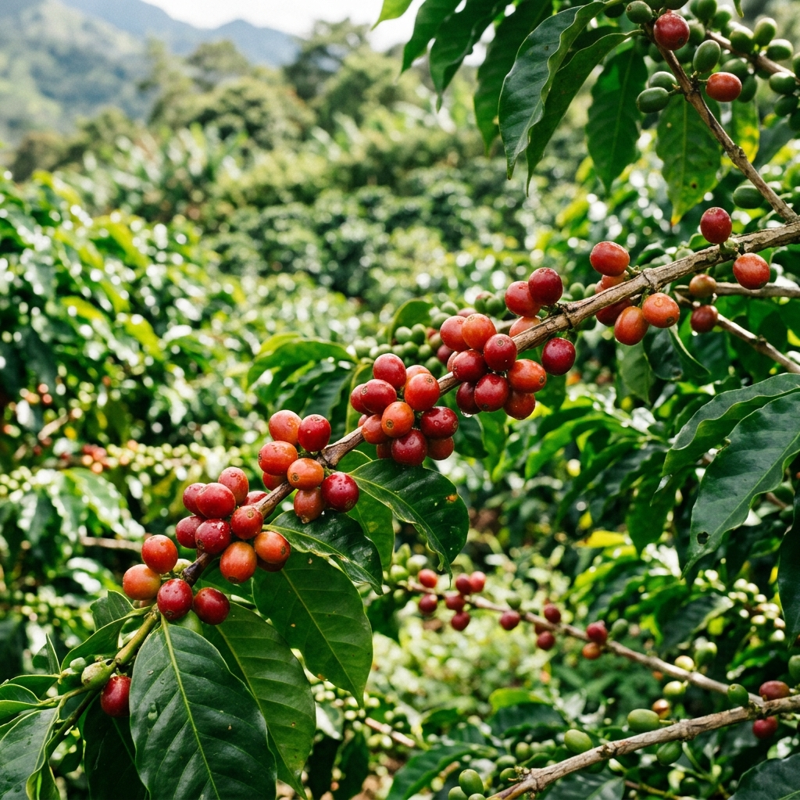

El Origen Dorado
Cuenta la leyenda que en las altas mesetas de Etiopía, un joven pastor llamado Kaldi notó que sus cabras se llenaban de una energía vibrante tras comer unas misteriosas cerezas rojas. Desde esos lejanos y míticos inicios, el café emprendió un viaje milenario que lo llevaría de los confines de Arabia hasta Europa, para luego conquistar todas las mesas del mundo.
Hoy no es solo una bebida; es una cultura profunda, un arte perfeccionado y la chispa irremplazable que enciende las mañanas de millones de personas.

Las Dos Estrellas del Mundo
Arábica
Considerado el más exquisito, representa alrededor del 60% de la producción mundial. Ofrece sabores complejos, con delicadas notas dulces, afrutadas o florales. Posee un menor contenido de cafeína y una acidez equilibrada en el paladar.
Robusta
Cultivado en altitudes menores, tiene una resistencia excepcional y el doble de cafeína que el arábica. Su sabor es más fuerte, amargo y terroso. Es el ingrediente perfecto para aportar la icónica "crema" al espresso.
Otras Variedades
Las variedades exóticas como Libérica y Excelsa, aunque menos comunes, ofrecen perfiles de sabor completamente distintos y complejos, aportando diversidad y un carácter ahumado a las mezclas gourmet.
Del Campo a tu Taza
Cultivo y Cuidados
El cafeto necesita entre 3 a 4 años para dar sus primeros frutos dorados. Se cultiva exclusivamente en el "Cinturón del Café", la zona ecuatorial que ofrece las condiciones exactas de clima, humedad y altitud.
Recolección
Las cerezas maduras se recolectan, en muchos casos, a mano (método de picking). Este minucioso trabajo asegura que solo los frutos en su punto ideal de dulzor pasen a la siguiente etapa.
Beneficio y Secado
Se extrae el grano de la fruta mediante métodos húmedos o procesos naturales. Posteriormente, el grano se seca al sol en amplios patios o elevadas camas africanas para alcanzar la humedad óptima.
El Tueste Maestro
El grano verde cobra vida al ser transformado por el calor. Aquí, los tostadores desarrollan la sinfonía de aromas y sabores: tuestes claros resaltan la acidez brillante, mientras los oscuros potencian el cuerpo robusto.
Rituales de Preparación
Cada método es un universo, extrayendo diferentes matices y aceites del grano para brindarte una experiencia sensorial única.
Espresso
Agua a 9 bares de presión a través de café finamente molido. Un elixir intenso, denso y coronado por su característica "crema" dorada.
Prensa Francesa
Inmersión total. Café de molienda gruesa mezclado lentamente con agua caliente, resultando en una bebida con gran cuerpo y retención de aceites.
V60 / Filtrado
Método de vertido manual "Pour-over". Ofrece un perfil increíblemente limpio y claro que resalta a la perfección las notas sutiles y florales.
Moka Italiana
Preparación clásica en estufa. El vapor presurizado empuja el agua hacia arriba a través del café, logrando una extracción fuerte y tradicional.
Salud Integral en Cada Gota
- Escudo celular: Rico en polifenoles y antioxidantes comprobados que protegen tus células del envejecimiento.
- Poder mental: La cafeína estimula los neurotransmisores, incrementando la concentración, la memoria y el estado de alerta general.
- Motor físico: Puede acelerar significativamente el metabolismo y mejorar el rendimiento deportivo.
- Bienestar social: Más allá de lo físico, la cultura del café fomenta la conexión humana, la conversación y reduce los niveles de estrés.
¿Sabías qué?
El café es considerado el segundo producto básico más comercializado en el mundo entero, únicamente superado por el petróleo. ¡Aproximadamente se consumen más de 2 billones de tazas al día alrededor del globo, convirtiéndolo en un lenguaje verdaderamente universal!
¿Listo para encontrar tu taza perfecta?
Suscríbete a nuestro boletín para recibir de primera mano los mejores granos de nuestro tostador maestro, directo a la puerta de tu hogar.